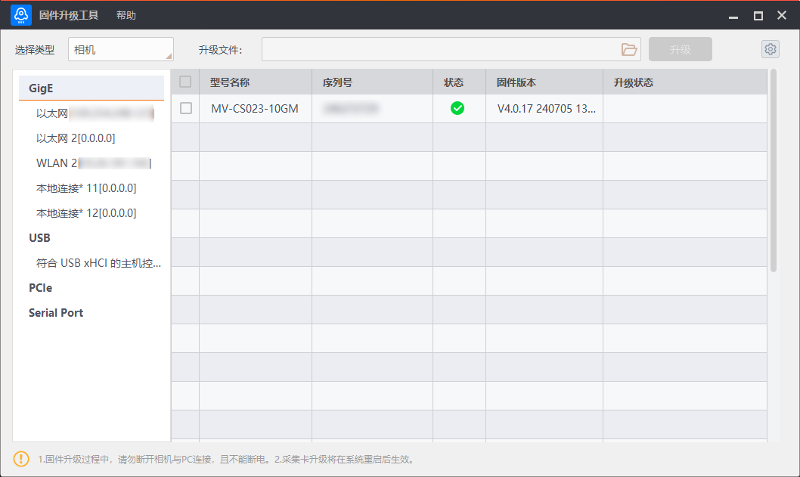
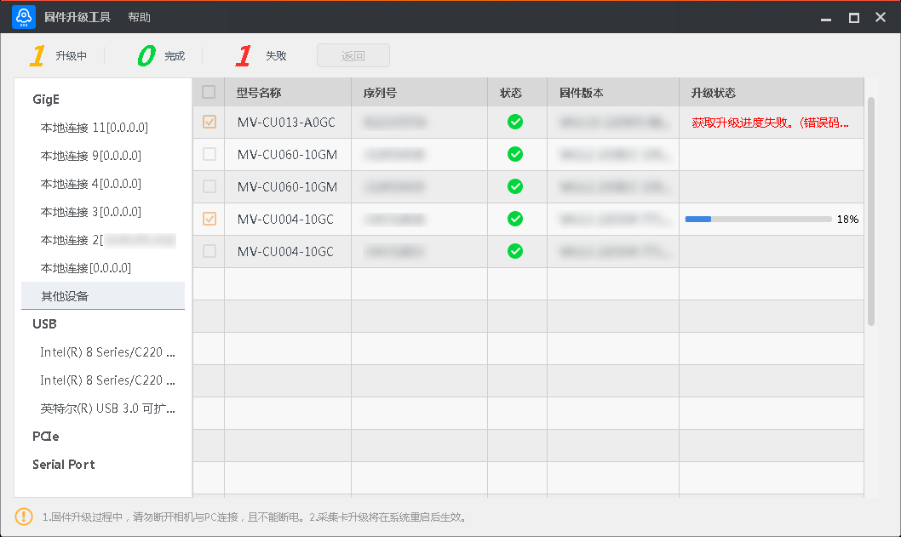

相机升级
相机的固件升级过程主要分为三个阶段，即。
搜索设备
打开固件升级工具后，在工具界面上方的选择类型处下拉选择相机。工具界面左侧显示当前PC上接口的信息，不同接口设备可进行不同操作，如下图所示。

图 1 相机升级-
GigE和USB接口：
-
选中GigE或USB，右侧显示GigE或USB下能搜索到的设备。
-
选中GigE或USB下的某个接口，右侧只显示该接口下能搜索到的设备。
-
工具可自动刷新枚举GigE和USB下的设备，也可通过GigE和USB右侧的
 手动刷新枚举。
手动刷新枚举。
-
-
PCIe接口：
-
选中PCIe，右侧显示PCIe下所有采集卡搜索到的相机。
-
工具可自动刷新枚举PCIe下采集卡搜索到的相机，也可通过PCIe右侧的
手动刷新枚举。
-
-
Serial Port接口：
-
选中Serial Port，右侧显示Serial Port下能搜索到的设备。
-
选中Serial Port下的某个接口，右侧只显示该接口下能搜索到的设备。
-
工具默认不自动刷新枚举Serial Port下的设备，需通过Serial Port右侧的
手动刷新枚举。
-
开始升级
确认需固件升级的相机处于可用状态，在工具右侧进行勾选后，单击工具上方的 选择固件升级包（dav文件）。
选择固件升级包（dav文件）。
工具可批量升级多个相机固件，最多可同时勾选20个相机。
-
若使用的升级包是针对某个型号的，则进行批量升级时，只能升级同型号相机。对于其他型号相机，若进行升级操作，升级状态栏提示“升级失败。（错误码：0x900006500）升级固件不匹配”。
-
若使用的升级包是针对多个型号的，则进行批量升级时，可以对升级包中包含的多个型号的相机都进行升级操作。对于不包含在升级包中的其他型号相机，若进行升级操作，升级状态栏提示“升级失败。（错误码：0x900006500）升级固件不匹配”。
完成固件升级包选择后，单击升级按钮即可。
-
升级固件过程中，请勿断开设备与PC的连接，并保证设备处于工作状态。
-
相机升级成功后将自动重启。
升级状态
工具左上角会显示当前升级相机的升级情况，如下图所示。可通过工具上方的返回按钮返回工具的初始界面。工具右侧选中的相机也会显示具体的升级状态。

图 2 相机固件升级